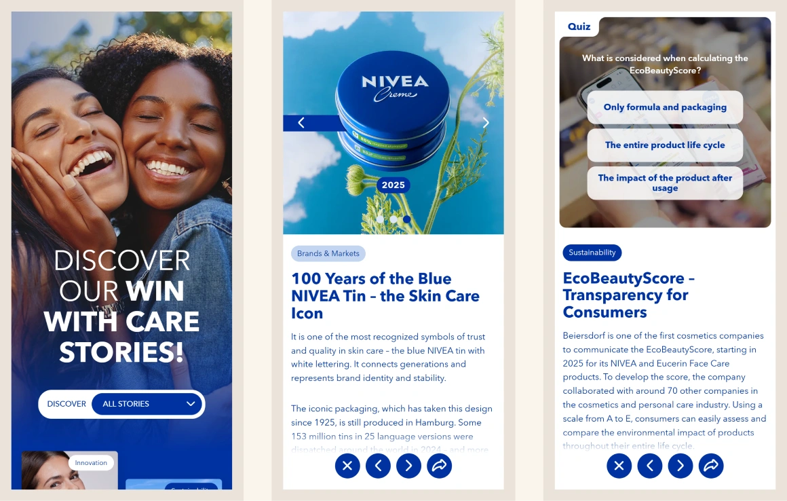

As Lead Designer for Beiersdorf’s annual report over three reporting years, I worked closely with the Corporate Communications team to highlight the company’s successes and goals and to translate complex financial and sustainability information into a clear and engaging experience across digital and print.
I developed a shared visual language and design system for both formats, creating a consistent experience for investors, media, employees and other stakeholders. Over three years, I evolved the report into a digital-first experience, introducing new features with each edition.

Digital-first storytelling

Sustainability Dashboard
Outcome